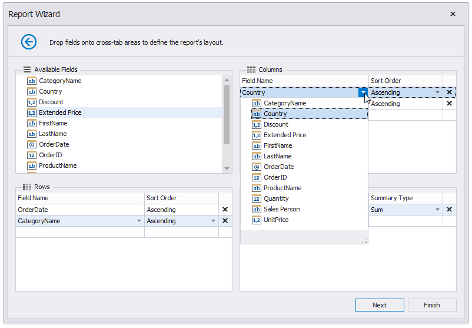
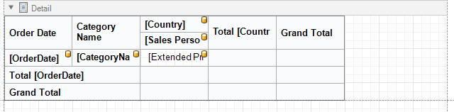

Cross-Tab Report
Select Cross-Tab Report on the wizard's start page to create a cross-tab report that displays multi-dimensional data.

Click Next and use the Data Source Wizard to set up a report's data source.
Once the data source is configured, you can define the report's layout on the next page. Drop data fields onto the following cross-tab area:
- Rows - defines row headers;
- Columns - defines column headers;
- Data - defines fields against which to calculate summaries.

You can also select a field from the corresponding drop-down list.

Note
The field order defines the hierarchy in the resulting cross-tab report. The higher the field on the list, the higher the level in the field hierarchy.
You can click Finish to stop the Report Wizard. If you want to customize the report further, click Next and proceed to the next pages:
The generated report contains the Cross Tab control that is configured based on the specified settings. The XRCrossTab control calculates automatic totals and grand totals across row and column fields.
